| 日付 | 2021年1月10日（日） |
|---|---|
| 山域 | 丹沢 |
| メンバー | 家族（妻、長女・9歳、長男・7歳） |
| 山行形態 | 子連れ日帰り |
| アクセス | 車 |
| ルート (Map) | 山北つぶらの公園駐車場 (8:18) - (8:57) 売店 - (9:38) 大野山 (10:32) - (10:53) 地蔵岩コース分岐点 - (11:43) 地蔵岩 - (12:24) 東名高速道分岐 - (12:59) 山北つぶらの公園駐車場 |
緊急事態宣言が出て最初の週末。
何を自粛すべきか、判断に迷うところだが、
行先は県内の山にとどめることにする。
今回の目的地は大野山。車では行きにくい山だと思っていたが、
最近、山北つぶらの公園という公園ができて、
マイカー登山もできるようになったようだ。
山北つぶらの公園の駐車場に到着。標高400m。
ガラガラでほとんど誰もいない。
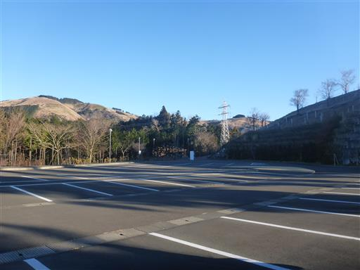
駐車場からは富士山がきれいに見える。
展望の良い公園として売り出しているようだ。
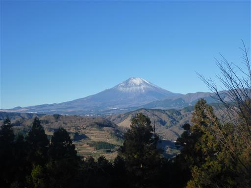
しばらく車道を歩いて大野山を目指す。道は不案内で若干分かりづらい。
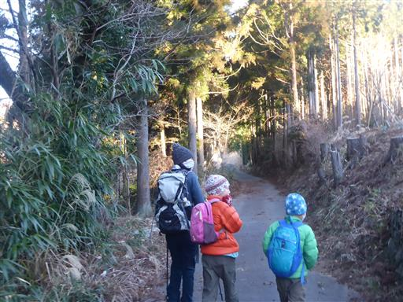
しばらく歩くと道は登山道になる。
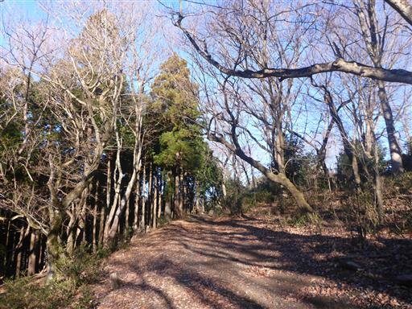
無人売店。ジャム、柚子胡椒、ミカンを購入。
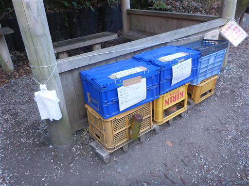
ここから先、展望の良い道になる。
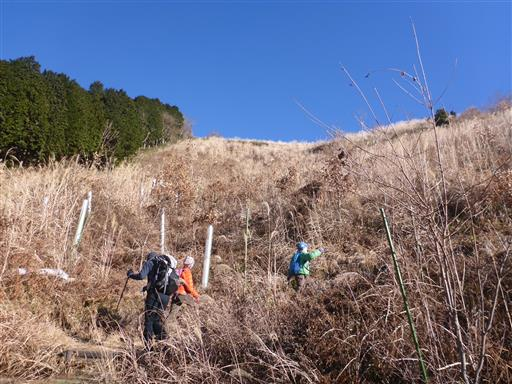
愛鷹山がくっきり見える。今日は非常に空気が澄んでいる。
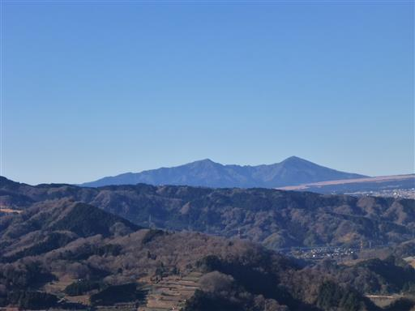
動物除けのネットがある。
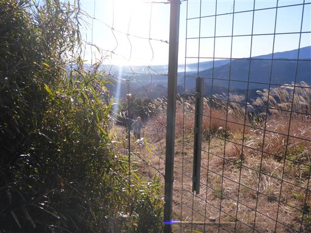
ススキが広がる登山道。
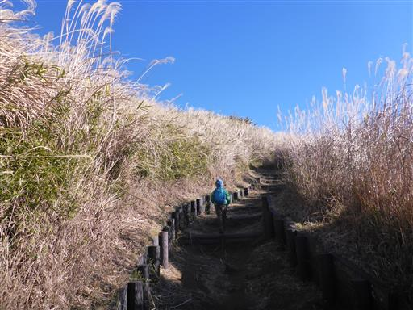
相模湾が陽の光を浴びて輝いている。
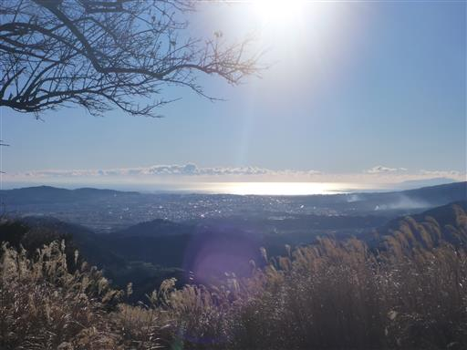
富士山もよく見えている。今年はちょっと雪が少ないのが残念だ。
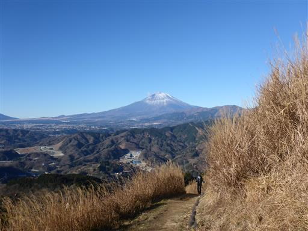
雲一つない青空。歩いていて気持ちがよい。
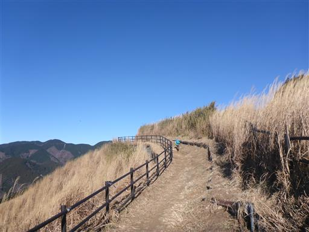
小さな東屋がある。
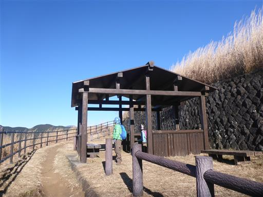
目の前に広がる絶景を眺める。
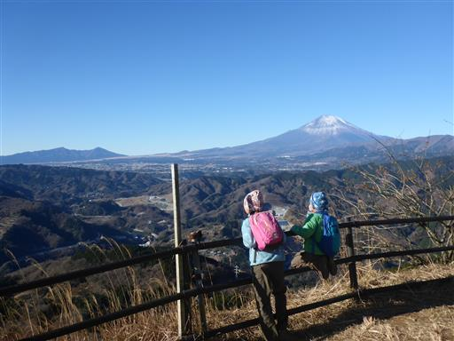
山頂に近づくと丹沢の山々が見えてくる。この山は丹沢の展望台としても秀逸だ。
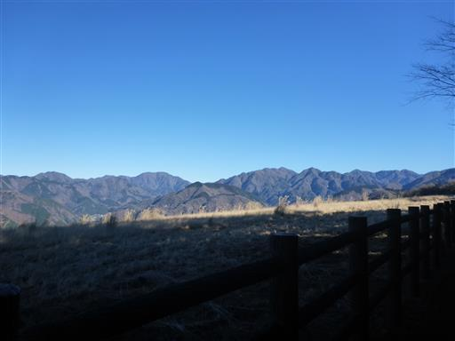
大野山山頂に到着。標高723m。
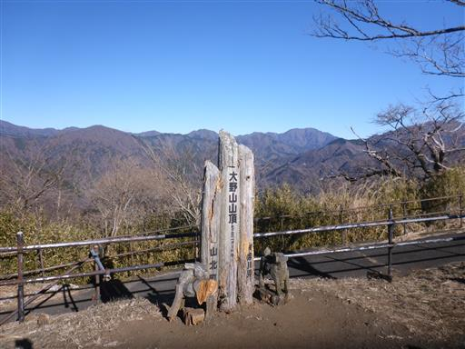
山頂は広々としている。車で山頂直下まで来ることもできるので、訪れる登山客は多い。
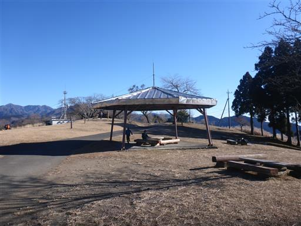
山頂からも、もちろん見事な富士山が眺められる。
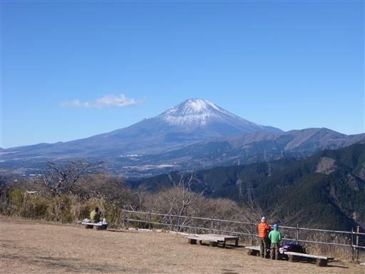
こちらは箱根の山々。大涌谷の周囲はまだ噴煙が上がっているように見える。
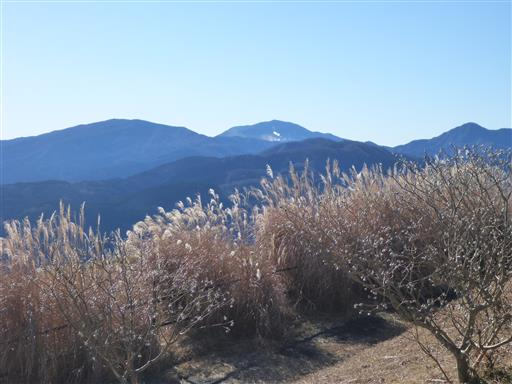
ミツマタの木が見られる。春には華やかになるだろう。
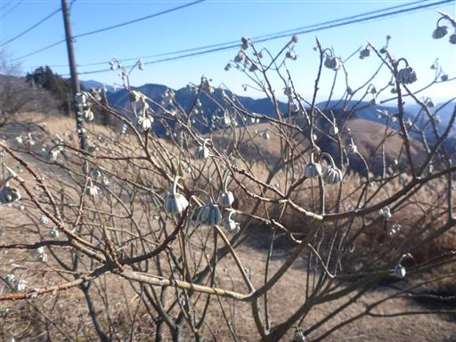
山頂の中央部に小さな祠がある。
今日は時間に余裕があるので、ちょっと寒いが山頂でゆっくりと過ごす。
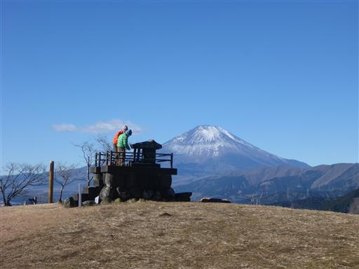
下山は地蔵岩コースを歩く。木彫りのクマが可愛らしい。
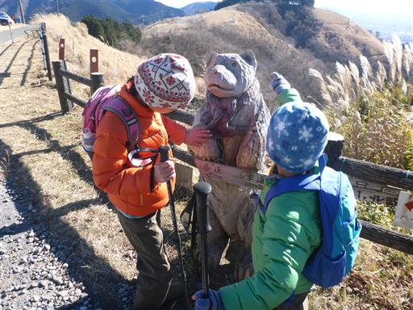
目の前に広がる丹沢の山々。
遠く神奈川県の最高峰・蛭ヶ岳まで見えている。
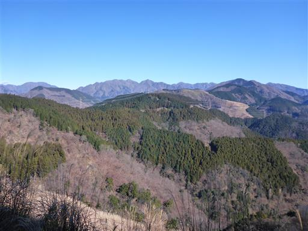
下山道は台風の影響で通行止め。
2010年の台風で、もう10年以上経つため復旧する気は無いようだ。
最近でも通過している人はいるため、この道を下る。
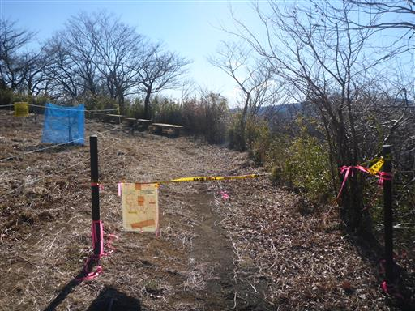
左側は牧場で、電気柵があるためちょっと落ち着かない。
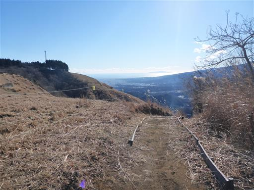
長い階段を下る。
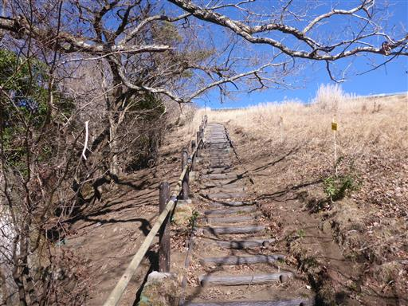
山の中腹につけられた登山道のため、右側が少々危険だ。
幸い登山道はそこそこ広い。
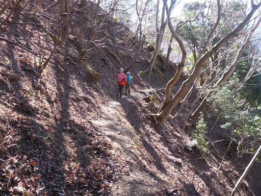
崩落地点。木橋は壊れていて通行不能で、左側から回り込む。
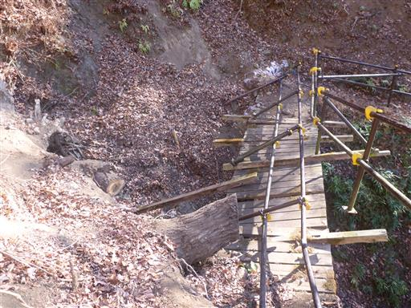
気を付けてわたる必要があるが、失敗して落ちても大怪我はしなさそうだ。
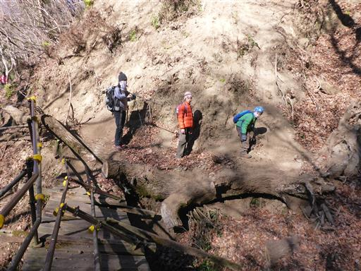
吹き溜まりになっていて落ち葉が大量に積もっている。地面が見えず歩きにくい。
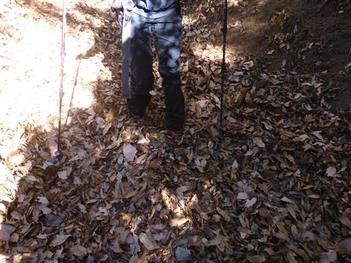
地面の穴からサラサラの砂が流れ出している。
なぜここだけ砂なのか不思議だ。
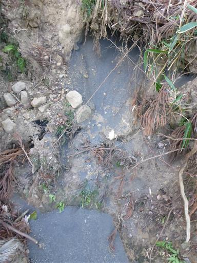
狭い登山道。水が流れて地面を削ったのだろうか？
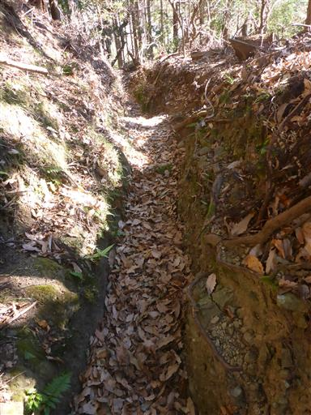
コンクリートの苔を削って絵が描かれている。
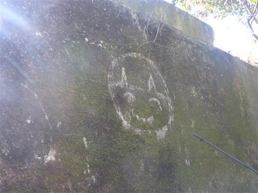
ここからは照葉樹林の道。冬枯れの景色から一変する。
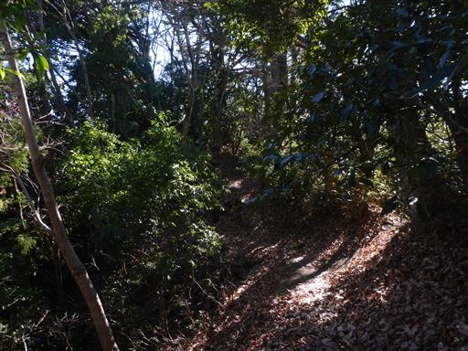
可愛らしいイラスト。ここでダウンジャケットを木に引っ掛けて破ってしまう。
今日は寒くてずっとダウンジャケットを着ながら歩いているのが仇となった。
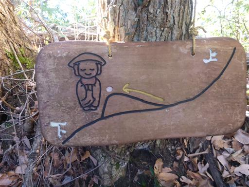
地蔵岩に到着。

地蔵岩から少し下ると車道に到着する。
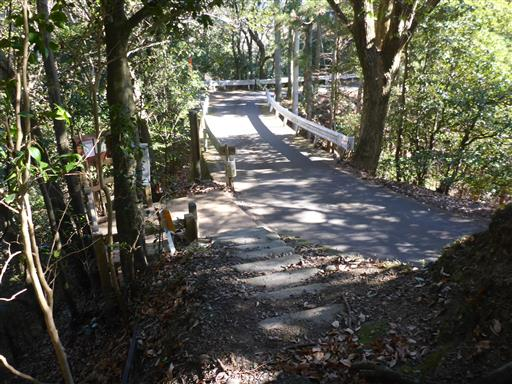
木彫りのキツツキ。
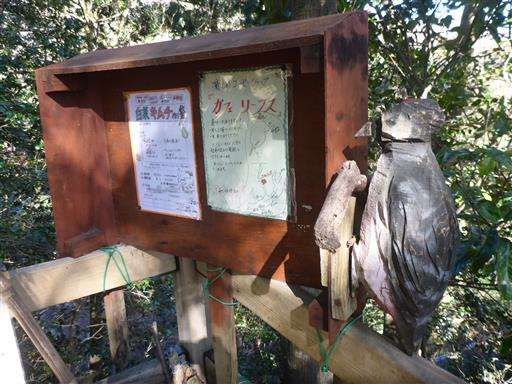
こちらは木彫りのイノシシ。
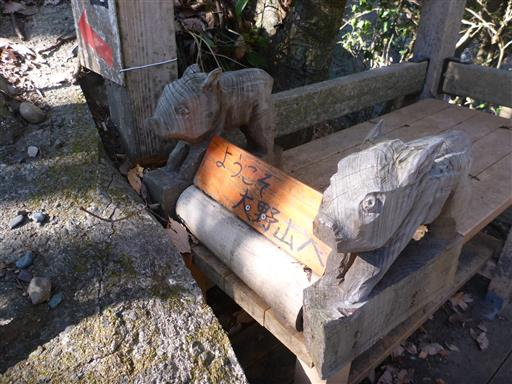
ここからは車道を延々と下る。
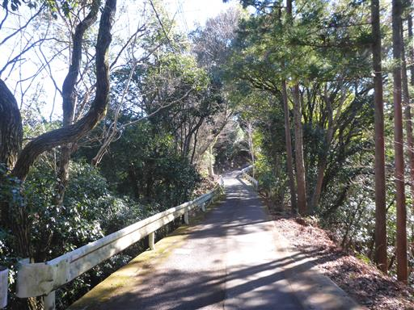
先ほど登った大野山が見えている。山頂に木がないのでよく目立つ。
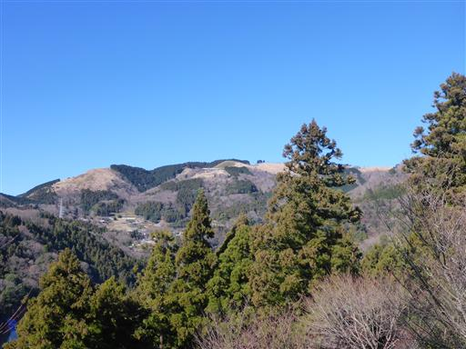
共和小学校跡。今でも何かに使われているようだ。
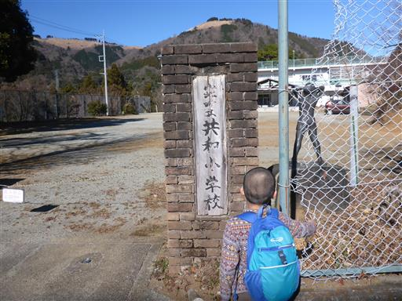
山奥だが、この辺りから民家が現れる。
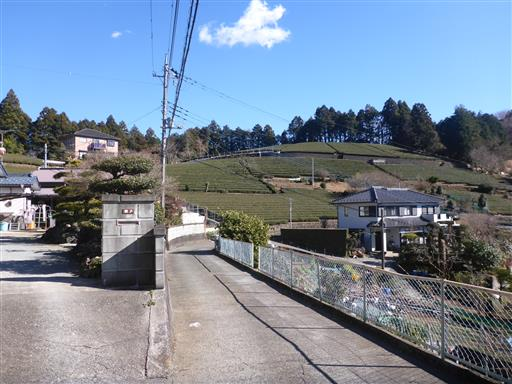
東名高速道路の下に出てくる。
ここから山北駅に下る道と分かれて、右折して山北つぶらの公園に向かう。
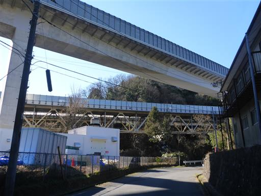
都夫良野地蔵堂。
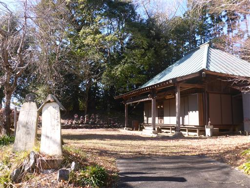
駐車場に戻ってくる。車道は登り中心でちょっと疲れた。
驚いたことに、駐車場には多くの車が止まっていて公園はよく賑わっているようだ。
とにかく寒い一日だったが、素晴らしい展望を満喫できた。
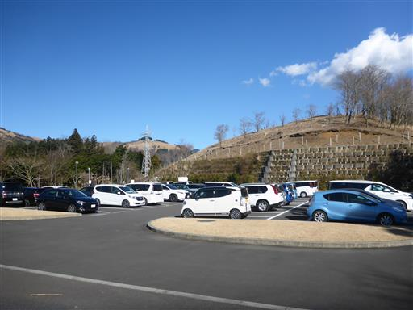